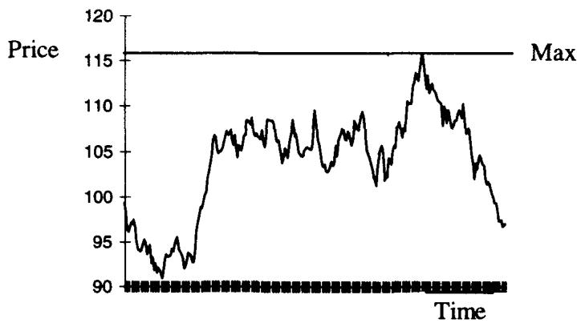
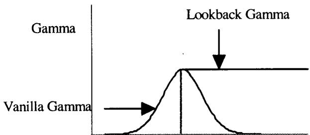
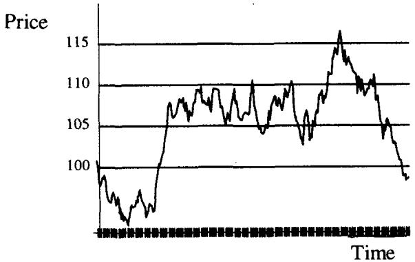
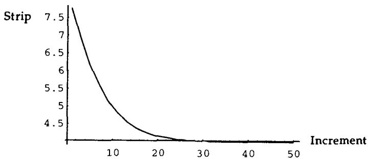
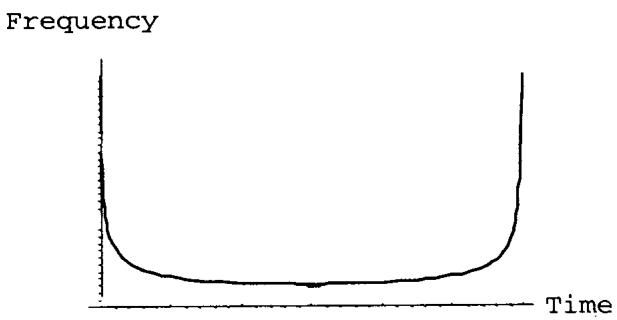
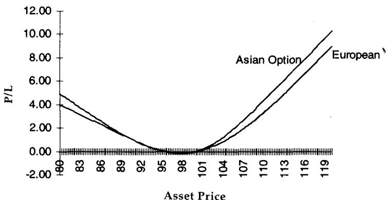
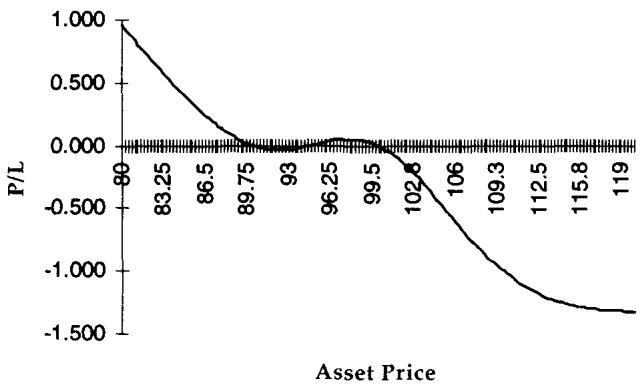

第23章：次要奇异期权——回望与亚式期权（Minor Exotics: Lookback and Asian Options）
A trader with a good mind, like good wine, improves with age. A bad trader rapidly turns into vinegar. —— 作者一位资深交易员朋友
导读：本章要解决的问题
Taleb 把回望（lookback）和亚式（Asian）期权称作"次要奇异期权"，理由很直白：尽管学术界为它们写了汗牛充栋的论文，它们本身并不构成有意义的交易新意。它们的风险，前面讲障碍期权和多资产期权的章节其实已经覆盖大半。本章要做的，是把这两类路径依赖期权归约到读者已经熟悉的工具上：回望是障碍期权条带（strip of knock-ins）的极限，亚式是篮子期权的一个脚注。
对一个已经掌握 BSM、障碍期权 skew 分析、篮子期权对数正态难题的读者，本章要补的集中在三件事上：
- 回望期权的核心风险是 gamma，而且是单边 gamma：它的 gamma 永远钉在存续期内已实现的极值处，所以无法用香草期权对冲掉，留下一个三阶矩（third moment）敞口。把它拆成 knock-in 条带，就能用第 19 章的 skew 方法精确建模。
- 极值的分布服从反正弦律（arcsine law）：布朗运动的极值最可能出现在很早或很晚，这解释了 lookback gamma 的时间分布和"driftwood"效应。
- 亚式期权把篮子的对数正态难题以更尖锐的形式重现：对数正态变量的算术平均不再对数正态，二阶矩之比约为 ，于是用约 1.73:1 的比率对冲香草后，剩下的是一个 short skew 头寸。算术平均不可逆（Jensen 不等式），这是亚式期权一个容易踩的坑。
笔记沿原文顺序展开：先讲回望与阶梯（ladder）期权，包括 rollover 复制、knock-in 条带分解、arcsine law；再以"篮子期权的脚注"讲亚式期权的几何/算术平均、对数正态难题、 比率对冲与 bucketing。每处把 Taleb 的交易直觉接回我们熟悉的定价命题。
一、回望与阶梯期权（Lookback and Ladder Options）
回望期权让持有人在设定期间内"卖在最高、买在最低"。因此它们被称为**浮动行权价（floating strike）**期权。还有别的变种，比如固定行权价（fixed strike）：持有人手里是一张平值期权，按期间内的最大值行权。这些变种本章不展开。
回望期权最大的问题是它通常不交易，因为价格太高。它确实非常贵，经验法则是约为常规期权权利金的两倍。

图 23.1 的结构让持有人卖在期间最高点。最高点结果是 116.92，于是持有人成了一张行权价 116.92 的看跌期权的快乐主人。从风险管理看，扎根于障碍期权的奇异期权交易员，通常不难理解回望产品带来的 skew 敞口。
单边 gamma：风险只在市场一侧
回望期权的主要风险是 gamma，而且容易看出它是"单边的"（one-sided），因为它只要求在市场的一侧行动、另一侧不要求。一张已经触到最大值（比如图 23.1 的 117）、然后跌回该最大值以下的回望期权，对卖方不再呈现重大 gamma，除非市场创出新高。这种情形让人想起障碍期权：gamma 在越过障碍之后改变了风格。

图 23.2 点出了问题的要害：香草期权的 gamma 是围绕行权价的钟形曲线，而回望期权的 gamma 像一座顶部平坦的悬崖。香草的 gamma 会随市场远离行权价而迅速衰减，回望的 gamma 却始终钉在已实现极值处不走。
Rollover 复制：strike bonus 的来源
回望期权可以从两个角度做风险管理：一是 rollover 复制，二是极限分解。Goldman、Sosin、Gatto 最初的定价正是受下面这个复制策略启发。
设交易商向客户卖出一张回望看涨，即未来一年"买在最低"的权利。交易商初始买入一张 1 年期平值看涨。如果市场立刻上涨，交易员会松一口气，因为风险不再需要动态对冲。但市场总有上下摆动的坏习惯。为了保证自己持有一张行权价等于最低点的看涨，交易商每次市场下跌时，都得把期权头寸滚动到一个更低行权价的看涨上。每次这样滚动都涉及一笔现金支出。这部分额外成本可以用一个随机积分算出。于是回望期权等于两部分之和：
- 最初那张期权。
- 看涨价差"向下滚动"（roll-down）的成本。
成本函数的随机积分（按现值）对应于相对平值期权的加价（markup），这种期权因此被称为 strike bonus（行权价红利）。
理论映射：rollover 成本就是局部时间上的随机积分
把 rollover 复制接回理论，它是浮动行权价回望期权解析解的金融直觉版。回望看涨的支付是 ，要复制"买在最低"，交易商必须在每次刷新新低时把看涨的行权价下调到新低。设市场在 内刷新新低，向下滚动的瞬时成本正比于"市场停留在当前最低点附近的时间"。把所有这些滚动成本在风险中性测度下贴现求和，得到一个对最小值过程 的增量的随机积分：
只在市场创新低时变动，其余时间是平的，这恰好对应"单边 gamma"。从随机分析看， 的支撑集就是布朗运动达到运行最小值的那个零测度时间集合，它与**局部时间（local time）**直接相关。这就是为什么回望期权的对冲成本可以写成一个干净的积分，也是为什么它的 gamma 永远定位在已实现极值处：滚动只在极值被刷新的瞬间发生。
回望期权的三阶矩敞口
这个框架还给出回望期权交易的真问题：skew。回望看涨在下行 skew（低行权价更贵）环境下更值钱，因为它的最大 gamma 永远位于期权存续期内市场触及的最低价；同理，回望看跌在这种 skew 环境下更不值钱，因为它的 gamma 位于较高水平。读到这里读者应当已经清楚：在下行 skew 的市场里，上行不是 gamma 该待的地方。
回望期权带有一个无法用香草期权对冲的三阶矩（third moment）敞口。
规则的原因是：回望的 gamma 永远在存续期内记录的极值处最大。一张初始能匹配其 gamma 风险的香草期权，会在持续抛售中迅速远离平值，而回望却保留它的 gamma。一个安慰是：回望的 gamma 仍是单边的，操作者不会被市场两边轮流抽打。
理论映射：为什么是三阶矩而非二阶矩
把这条规则翻译成矩的语言。香草期权对冲的是二阶矩（方差），它的 vega/gamma 围绕一个固定行权价分布。回望期权的行权价本身是随机的（等于路径极值），极值与终值之间的联合分布是偏斜的，这种偏斜由分布的第三矩刻画。skew（隐含波动率对行权价的斜率）正是市场给第三矩定价的方式。香草期权组合可以匹配任意给定的二阶矩，但它的对称结构无法复制"gamma 永远跟着极值跑"这种偏斜敞口，所以回望留下一个不可对冲的三阶矩残差。这也解释了为什么必须用 knock-in 条带、配上 strike 相关的波动率函数来建模，因为只有把 skew 显式嵌进去，才能抓住第三矩。
二、阶梯期权（Ladder Options）与 knock-in 条带分解
在看回望的第二种定价方法之前，先看一种涉及它们的组合。阶梯期权是让持有人在一些设定的离散增量上"卖在最高、买在最低"的回望期权，也叫离散回望（discrete lookbacks）。

例：同样的回望让持有人卖在最高，但按 5 美元的增量来卖，可以卖在 105、110、115、120 等。最高点是 116.90，但结构持有人能卖在 115，这不算灾难。图 23.3 显示阶梯像一个"价格上取整"的回望。它们更便宜，因为支付被封顶在回望的水平上。前例中，阶梯比回望少付 1.90。
同一问题的两个学科视角
数学家知道应用问题可以从几个不同学科入手得到相同结果，期权估值也一样。阶梯期权可以看成"只在设定价格增量上计算 strike bonus"的回望，也可以看成一条 knock-in 期权的条带（strip of knock-in options）。
设期权给予按最佳高点向下取整到 5 点（100、105、110、115……）卖出资产的权利，资产价格 100。用记号 ，可分解为：
- Long 1 （立即敲入）
- Short 1
- Long 1
- Short 1
- Long 1
- Short 1
- Long 1
- Short 1
- Long 1
如此继续，直到 与 之差缩小到一个很小的数。现在轮到 skew：读者可以用第 19 章的方法计算 knock-in 期权的 skew，从而为阶梯和一般回望建立更精确的模型。
回望期权可以看成这种分解在行权价间距趋于零时的极限。一般公式是
其中 是增量， 表示 knock-in put。阶梯的最小值是用 knock-in call 构造的镜像。有 skew 意识的交易员一定会用一个与障碍行权价相关的波动率函数来改进公式，这通常会大幅抬高回望的价格。

图 23.4 显示，随着交易员加大 knock-in 各腿之间的间距，knock-in 条带的价格会从回望偏离开来、收敛向香草。图描绘的是一张平值、1 年期、无漂移、10% 波动率的期权。最左端是回望的价格，接近香草的两倍；最右端是香草的价值。
Driftwood 效应
除了 skew，这个产品还表现出交易员称之为"driftwood（浮木）"的效应，这与障碍期权遭遇的是同一个慢性问题：行权价集中堆在近期低点之下、近期高点之上。这导致可观的 bad gamma，即当对冲它的成本变得昂贵时，操作者将开始承受的那种 gamma。
理论映射：阶梯分解就是用 Arrow-Debreu 证券逼近极值支付
把阶梯分解接回理论， 这个差，在 时趋向一个写在"市场恰好触及 这个新极值"事件上的 Arrow-Debreu 型证券。把所有这些极值事件的状态价格加总，就重建了回望的支付。这与第一章污染原理、第 22 章篮子分解一脉相承：复杂路径依赖支付被分解成可定价、可对冲的构件之和。关键在于每个 的定价都要用它自己行权价/障碍处的波动率（即把 skew 嵌进去），否则用平价波动率会系统性低估回望，这正是 Taleb 说"用 strike 相关波动率函数会大幅抬高价格"的根据。driftwood 效应则是障碍期权 bad gamma 的复现：极值附近 knock-in 密集堆叠，gamma 在那里集中且符号尖锐，越靠近极值越难对冲。
Arcsine 律：极值最可能出现在很早或很晚
最后值得一提的是无处不在的随机游走**反正弦律（arcsine law）**的又一应用，第 3 章用它描述过单个交易员的盈亏分布（见图 23.5）。任何布朗运动的极值分布都满足：极值最可能出现在很早或很晚的时刻。

为什么？从期间中点切入更好理解。设期权还有 6 个月到期，市场刚创新低。这个新低成为未来 6 个月最低点的概率很弱，因为市场有很高概率继续下行。这就好像交易员面前摆着一张全新的回望期权。再看期间开头：市场已经触及某个极值的可能性很高，因为任何趋势都会朝另一侧累积。如果掷骰子连赢三把，累积盈亏是三，趋势使得"最低点（这里是 0）接近原点"的概率最高。
理论映射：arcsine 律与回望 gamma 的时间结构
反正弦律的严格陈述是：布朗运动在 内达到其最大值的时刻 ，其分布密度为
这是一条 U 形（碗形）密度，在 和 处发散，在中点最低。它的交易含义很具体：回望期权的极值（也就是它的有效行权价）最可能在期初或期末被确定，而不是均匀分布在存续期内。从中点的视角看，一旦市场刚创新低，这个低点很难是最终的低点，交易员手里相当于又拿到一张"全新的回望"，gamma 重新被激活；从期初视角看，极值往往一开始就被早早锁定。这条律也是第 3 章用来刻画交易员累积盈亏分布的那条律，Taleb 在此把它从"盈亏路径"迁移到"价格极值路径"，两者本质是同一个随机游走的运行极值问题。
三、篮子期权的脚注：亚式期权（Asian Options）
亚式期权常被交给初级交易员，因为它们的风险很有规律、管理起来很容易。亚式期权指写在平均值上的期权，支付依赖某段时间内事件的加权组合。
它包括平均浮动行权价（average floating strike，像回望一样，持有人通过时间获得一个行权价）和固定行权价（fixed strike，行权价已知，按某个时间窗内的加权平均结算）。平均有几种类型，几何平均和算术平均最常见。这次把通常的布朗运动按相等的单步间隔离散化（无漂移）：
其中 是波动率， 是到期时间， 是中心化正态变量。
几何平均：
其中权重 之积等于 。作者从没见过这种交易实际发生，但有必要分析它，以便看清它和算术平均的差别，因为几何平均在金融市场里更"自然"。
算术平均：
其中权重 之和等于 。
几何平均仍对数正态，算术平均不再
像第 22 章的练习一样，下面的展开帮助理解亚式期权的定价困难。设一个四天的平均，几何平均的过程为
它取指数形状，可以用简单的 BSM 轻松得到一些封闭形式结果。算术平均则更有启发性，看同样四天的过程：
这恰如用户在看一个写在同波动率独立资产上的期权线性组合（已知 相互独立）。它几乎没有对数正态性，因为过程无法概括成 的形式。换句话说，得不到一个正态分布的 。
这个复杂性已经耗费了不少笔墨。作为交易员，作者很快就被亚式期权"催眠"了；作为业余概率学家，他发现这个过程颇为古怪。本章余下聚焦于对冲真正重要的几点。现行定价方法试图"糊弄"平均值 的过程，找一个能跟踪"对数正态分布与平均值分布之间偏差"的形式。
理论映射：这个偏差就是 skew
读者会高兴地发现，这个偏差就是 skew。多数"糊弄"方法试图通过探测分布的各阶矩、再凑一个满足这些矩的对数正态分布函数来复制分布（即 moment matching，矩匹配，如 Turnbull-Wakeman、Levy 用对数正态匹配前两阶矩）。但多数交易员还是更满意于动用更有趣的 Monte Carlo 引擎。
把亚式期权接回第 22 章：算术平均是若干对数正态资产的加权和，而"对数正态之和不再对数正态"。亚式期权和篮子期权因此是同一个数学困难的两种外形——篮子是跨资产求和，亚式是同一资产跨时间求和。差别在于亚式的各期价格是强正相关的（同一标的的连续观测），这反而让平均的分布比一般篮子更接近对数正态，所以矩匹配在低波动率下够用。真实分布与拟合对数正态之间的残差呈 skew 形，这就是为什么用香草对冲亚式会留下一个 short skew 头寸。
比率对冲
把平均值的分布与标的本身的分布相比，可以看出两者二阶矩之比接近 。所以瞬时局部方差可以用一个等额的比率对冲来缓解：
- 交易员买入一张亚式期权，按约 1.73:1 的 gamma 中性比率卖出对应的香草期权。

图 23.6 独立比较两个头寸。

图 23.7 显示两者之间的价差，正如预期，是 short skew。
理论映射： 从哪来
这个 是连续时间均值方差的经典结果。设标的服从无漂移的算术布朗近似，终值方差正比于 。而时间平均 的方差要对所有时点两两求协方差。利用 ，
所以平均的标准差是终值标准差的 倍。等价地，亚式期权的"有效波动率"约为 。要让亚式与香草在局部 gamma 上中性，就得按标准差之比 配比，这正是 1.73:1 的来源。直觉上，平均化把路径上的波动"抹平"了，平均值远没有终值跳得厉害，所以亚式期权天然比同期限香草便宜、波动率敞口更小，这也是它"风险有规律、适合初级交易员"的根本原因。
复利视角：指数之和与和之指数
理解这个效应的一个有用角度是复利。指数之和与"和之指数"的增长方式不同。两个指数之和 即便等于另一个 ，当它们都乘以 2 时也不会同步增长：结果是 ，对比 。读者可以做这个练习，看到指数的一个凸性特质。这正是 Jensen 不等式在起作用：算术平均对凸的指数函数不可交换，（后者即几何平均），差额就是平均值分布相对对数正态的那点偏斜。
定价与对冲的实务要点
给亚式期权定价时，建议使用远期波动率和远期利率（即整条曲线），因为每个 bucket 都重要。还建议在波动率升到 30% 以上时使用 Monte Carlo；其余多数情形，基于通常近似的定价模型就够用了。近似上多抠出来的那点精度，相比使用同方差（homoskedastic）模型损失的精度微不足道。
最后几点：
Bucketing。 亚式期权需要一张 bucket vega 的时间表和一个远期分布。奇怪的是，远期对冲的中点在视觉上很像停时（stopping time）的中点。
算术平均不可逆，这是 Jensen 不等式的结果。USD-DEM 上的平均，不等于 1/(DEM-USD 上的平均)。
理论映射：bucket vega 与不可逆性
bucketing 的必要性来自亚式期权对整条远期曲线和波动率期限结构的依赖：平均值由若干观测点构成，每个观测点落在曲线的不同位置，所以 vega 必须按 bucket 分解，而不能用单一平价波动率。"远期对冲中点像停时中点"这个观察，呼应了 arcsine 律：平均的有效"质心"在时间上的分布，和极值出现时刻的分布有相似的结构。至于不可逆性的陷阱，它是两国悖论（第 22 章 Siegel 悖论）在平均算子上的复现：算术平均 与 （调和平均）不相等，因为 是凸函数，。所以一张写在 USD-DEM 算术平均上的亚式期权，和一张写在 DEM-USD 算术平均上的，定义的根本不是同一个标的，换 numeraire 时绝不能想当然地取倒数。
四、本章综述：理论与实务的对照
| Taleb 的实务命题 | 对应的理论命题 |
|---|---|
| 回望主要风险是单边 gamma，钉在已实现极值 | gamma 跟随运行极值 ；滚动只在刷新极值时发生 |
| rollover 复制产生 strike bonus | 对极值过程增量的随机积分，关联 local time |
| 回望带不可对冲的三阶矩敞口 | 极值与终值联合分布偏斜，由第三矩/skew 刻画 |
| 回望在下行 skew 中更贵（看涨） | gamma 定位在最低价，低 strike 波动率更高 |
| 阶梯 = knock-in 条带，回望是其极限 | |
| 用 strike 相关波动率函数抬高回望价 | 把 skew 嵌入每个 KI 的定价 |
| driftwood 效应 = bad gamma | 极值附近 knock-in 密集堆叠，gamma 集中 |
| 极值最可能在很早或很晚出现 | 反正弦律 |
| 几何平均仍对数正态，算术平均不是 | 后正态可加 vs 不可拆 |
| 平均值与标的二阶矩之比 | ，有效波动率 |
| 1.73:1 比率对冲后剩 short skew | 标准差之比 ，残差是分布偏斜 |
| 亚式定价需整条曲线、>30% 用 Monte Carlo | bucket vega；同方差模型在高波动下失真 |
| 算术平均不可逆 | Jensen：，两国悖论复现 |
核心观点
第一，这两类期权没有独立的交易新意，它们是已学工具的极限或脚注。回望是 knock-in 条带的极限，亚式是篮子期权在时间维度上的版本。会拆，就会管。
第二，回望的风险本质是单边 gamma 加三阶矩敞口。gamma 永远钉在已实现极值处，香草对冲不掉这种偏斜，必须把 skew 通过 knock-in 条带显式建模。
第三，极值的时间分布服从反正弦律。极值偏爱期初和期末，这决定了回望 gamma 的时间结构，也是 driftwood 这种 bad gamma 的来源。
第四，亚式期权把篮子的对数正态难题以更温和的形式重现。算术平均不对数正态，但因同标的跨期强相关，矩匹配在低波动下够用；有效波动率约为 ，所以亚式天然便宜、好管。
第五，平均算子不可逆。算术平均的倒数不是倒数的算术平均，换 numeraire 必须当心，这是 Jensen 不等式的又一次现身。
面对一张新结构的操作清单
读完本章，遇到任何路径依赖（极值型或平均型）结构，可依次自问：
- 它依赖路径的什么泛函？运行极值（max/min）还是时间平均？
- 如果是极值型，gamma 是不是单边、钉在已实现极值处？能拆成 knock-in 条带吗？
- 它的不可对冲残差是几阶矩？我有没有把 skew 通过 strike 相关波动率嵌进每个构件？
- 极值最可能何时出现？arcsine 律对我的 gamma 时间分布意味着什么？哪里会有 driftwood/bad gamma？
- 如果是平均型，标的里有没有"和"？算术平均不对数正态，我用矩匹配还是 Monte Carlo？
- 有效波动率是不是被平均压低了（ 量级）？对冲香草的比率该是多少？
- 定价用的是单一波动率还是整条远期曲线？vega 是否按 bucket 分解？波动率超过 30% 了吗？
- 涉及货币或比率时，平均算子可逆吗？换 numeraire 会不会触发不可逆性陷阱？
一句话收束
本章最该记住的一句：回望和亚式没有新风险，回望是 knock-in 条带的极限、gamma 永远钉在路径极值上而留下不可对冲的三阶矩，亚式是篮子期权在时间上的版本、被平均压低到 的有效波动率，所以面对路径依赖期权，先问它依赖路径的哪个泛函，再把它拆回你已经会管的构件。